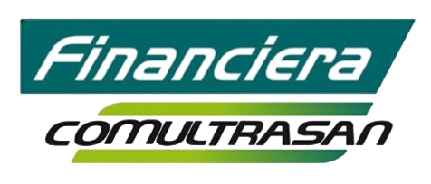

Un agente orquestador (Orbit) sobre WhatsApp que resuelve, guía y deriva — sin sumar otro chat a la experiencia del asociado.
PARA

Preparado para
Financiera Comultrasan · Área de Canales Virtuales y Electrónicos
Preparado por
Campuslands S.A.S. BIC · Full Service — Expansión Global
Contacto Comultrasan
Angela Latorre — Jefe de Canales Virtuales y Electrónicos
Contacto Campuslands
Gabriela Pedraza Rueda — Liderazgo Expansión Global & Full Service
01 · Contexto del Proyecto
Un agente que
Campuslands presenta una propuesta para diseñar e implementar un asistente conversacional con IA Generativa, orquestado por Orbit, sobre WhatsApp y el botón Canales Digitales del sitio web — resolviendo sin fricción las consultas operativas más recurrentes con el contenido que Comultrasan ya produjo, y escalando a mediano plazo hacia precalificación de crédito, vinculación y generación de leads comerciales.
Carga Operativa
Reducción en canales tradicionales — oficina y contact center.
Adopción Digital
Incremento en el uso de canales transaccionales ya existentes.
Leads Comerciales
Calificados y trazables, listos para el equipo comercial.
Satisfacción
Mejora medible en el CSAT del asociado tras cada interacción.
02 · Punto de Partida
Lo que la reunión con Comultrasan
"
Lo que se quiere es que ingresen por un mismo lugar y, dependiendo del desarrollo, yo lo vaya orientando… que la asistente conteste de una vez lo que está en la página.
— Angela Latorre, Jefe de Canales Virtuales y Electrónicos
1Baja adopción recurrente de la agencia virtual y la app móvil, pese a estar disponibles.
2Tres barreras en cascada: descarga de la app, desconocimiento de cómo usarla y desconfianza hacia los medios transaccionales.
3Contenido de soporte disperso: los vídeos tutoriales y FAQs existen, pero "nadie entra a leer".
4El asistente actual no tiene IA generativa: cuando el asociado pregunta, "me va a trasladar" — no resuelve.
03 · Por Qué Campuslands
Un solo orquestador,
La diferenciación de Campuslands no está en ofrecer "un chatbot más", sino en resolver exactamente la objeción que la propia cooperativa planteó en la reunión: demasiados asistentes generan confusión.
01
Un solo agente orquestador
Orbit centraliza la conversación y enruta según la intención del asociado, sin que perciba el cambio de área.
02
Contenido real, no genérico
Entrenado con los vídeos y FAQs que Comultrasan ya produjo, respondiendo directo en la conversación.
03
Sobre el canal ya adoptado
Se construye sobre WhatsApp y el botón Canales Digitales existentes, sin fuga hacia un chat nuevo.
04
Arquitectura para escalar
El mismo orquestador se extiende a crédito, vinculación o PQRS sin rehacer nada.
04 · Antes / Después
Impacto en el
AntesCon Orbit
El asociado no sabe por cuál canal preguntar; se dispersa entre FB, WhatsApp y web sin resolución.Un solo punto de entrada (WhatsApp / botón Canales Digitales) enruta internamente sin fricción visible.
Las consultas operativas repetitivas saturan oficinas y contact center.Orbit resuelve 24/7 con el contenido ya producido por Comultrasan (vídeos, FAQs entrenadas).
El asistente actual traslada al usuario sin responder; genera desconfianza.Respuesta generativa inmediata; solo escala a un asesor humano lo que no está entrenado.
Los intereses comerciales (crédito, vinculación) se pierden sin registro ni seguimiento.Leads calificados y priorizados quedan listos para el equipo comercial.
Cada nueva necesidad implica evaluar o sumar otro asistente distinto.La misma arquitectura de Orbit escala a nuevas líneas de negocio sin duplicar herramientas.
05 · Captación · Colocación · Retención
Alineado con los
01Captación
Leads priorizados
Orbit clasifica leads con lógica de priorización — "estrategia de semáforo" por monto de crédito solicitado — y los entrega listos para contacto comercial.
02Colocación
Menos fricción
La precalificación conversacional reduce la fricción para solicitar productos de crédito, guiando al asociado paso a paso en vez de un formulario estático.
03Retención
Confianza digital
Resolver de forma inmediata y consistente reduce la frustración que hoy empuja al asociado a volver a la oficina física.
06 · Cómo Funciona
Orbit como
Asociado — WhatsApp / Web
ORBIT — Agente OrquestadorClasifica intención y enruta
Canales Digitales
App, agencia virtual, transferencias.
Ventas & Crédito
Precalificación y leads comerciales.
PQRS & Jurídico
Quejas, reclamos, derivación.
Respuesta entrenada (FAQs, videos, políticas) — o derivación a línea humana si no está entrenado
Panel de Gestión
El equipo de Comultrasan visualiza los leads por línea de negocio y ajusta reglas de clasificación y contenido entrenado sin depender de un desarrollo nuevo.
07 · Reducción de Fricción
Flujo 1 —
Construido sobre una de las consultas que Comultrasan identificó como más recurrentes en la reunión, este flujo muestra cómo Orbit reemplaza el "te traslado" del asistente actual.
Resultado
Respuesta accionable en el mismo mensaje, con el paso a paso completo y el vídeo tutorial ya producido por Comultrasan.
OOrbit — Asistente Comultrasan
AsociadoHola, quiero hacer una transferencia rápida pero no sé cómo
Orbit¡Claro! Te guío para hacer una Bre-B en menos de 1 minuto. ¿Desde la Agencia Virtual o la App móvil?
AsociadoDesde la app
OrbitPerfecto: 1) Entra a "Transferencias". 2) Selecciona "Bre-B". 3) Ingresa la llave del destinatario. 4) Confirma y autoriza con tu clave.
AsociadoListo, gracias, ya la hice
Orbit¡Genial! Si te vuelve a pasar, escríbeme por aquí mismo.
07 · Reducción de Fricción (cont.)
Flujo 2 —
Con derivación comercial calificada: la conversación no se pierde en el camino, se convierte en una solicitud priorizada y trazable para el equipo comercial.
Estrategia de Semáforo
La solicitud queda clasificada internamente con prioridad según el monto, y disponible para el equipo comercial designado por Comultrasan.
OOrbit — Asistente Comultrasan
AsociadoNecesito información para sacar un crédito
OrbitCon gusto te oriento. ¿Qué tipo de crédito te interesa: libre inversión, vehículo o vivienda?
AsociadoLibre inversión, unos 8 millones
OrbitCon $8.000.000 accedes a nuestra línea de libre inversión para asociados activos. ¿Te conecto ya con un asesor comercial?
AsociadoSí, conéctame con alguien
OrbitListo, registré tu solicitud de crédito libre inversión por $8.000.000. Un asesor te contactará hoy mismo.
08 · Stack e Infraestructura
Arquitectura técnica
Motor de IA GenerativaLLM de propósito general (familia GPT / Azure OpenAI) entrenado con prompts, políticas y contenido propio de Comultrasan.
Orquestador MultiagenteOrbit (Campuslands): clasificación de intención, enrutamiento interno y gestión de tono de respuesta por área.
Canal Principal — WhatsAppIntegración vía WhatsApp Business (Meta Cloud API), sobre la línea que Comultrasan designe.
Canales AdicionalesEnlace con el botón "Canales Digitales" del portal web y el asistente actual de Facebook, sin chat paralelo.
CRM / Trazabilidad ComercialIntegración vía API con HubSpot — ya utilizado por Comultrasan — para trazabilidad de leads al equipo comercial.
Core FinancieroEn esta fase, Orbit informa y guía; no ejecuta transacciones ni consulta saldos o movimientos individuales.
Identidad y Datos SensiblesEl asistente no solicita ni expone datos transaccionales; toda consulta con autenticación se deriva a canales oficiales.
Escalamiento HumanoToda consulta fuera del entrenamiento se deriva a una línea definida por Comultrasan, con reporte de vacíos de conocimiento.
09 · Cómo se Mide el Resultado
Métricas
FCR
Incrementar la resolución en el primer contacto sin escalamiento humano.
Panel Orbit
Carga en Contact Center
Disminuir el volumen de consultas operativas repetitivas atendidas por oficina.
Comparativo
Conversión de Leads
Aumentar solicitudes de productos iniciadas por canal digital.
Orbit + HubSpot
Tiempo de Respuesta
Respuesta inmediata (24/7) frente a los tiempos actuales de oficina.
Panel Orbit
CSAT
Mejorar la satisfacción percibida del asociado tras la interacción.
Encuesta
10 · Cómo se Construye
Seis fases
La duración del desarrollo (típicamente entre 3 y 6 meses) depende del alcance final definido en la toma de requerimientos y de la disponibilidad del equipo técnico de Comultrasan.
1
Toma de Requerimientos
Revisión del asistente y canales actuales junto al equipo técnico.
2
Diseño Conversacional
Arquitectura de Orbit, flujos y reglas de enrutamiento.
3
Desarrollo e Integración
Entregas parciales cada 8–15 días con ajustes conjuntos.
4
Pruebas de Calidad
Validación funcional antes de exponer al asociado.
5
Despliegue Controlado
Lanzamiento gradual sobre WhatsApp / Canales Digitales.
6
Optimización Continua
Mejora basada en analítica y vacíos de conocimiento detectados.
11 · Nivel Comercial
Esquema comercial
Modalidad A · Proyecto por Fases
Alcance cerrado tras la toma de requerimientos, con pagos asociados a los hitos de entrega del cronograma.
Modalidad B · Acompañamiento Continuo
Posterior al despliegue: soporte, ajustes de contenido entrenado y optimización basada en analítica.
Inversión
Rango de inversión a definir tras la toma de requerimientos técnica — varía según las líneas de negocio activadas, el volumen de contenido a entrenar y el alcance de integraciones (WhatsApp Business, HubSpot).
1
Seguimiento activo de consultas no resueltas, reportadas para cerrar vacíos de entrenamiento.
2
Ciclos de ajuste conjuntos cada 8–15 días, durante el desarrollo y tras el lanzamiento.
3
Cumplimiento de los parámetros de Meta para mensajería comercial en WhatsApp Business.
12 · Cierre
Próximos
1Validar el alcance inicialCanales Digitales y el presupuesto de referencia de esta propuesta.
2Coordinar la reunión técnicaCon el equipo de TIC de Comultrasan y el responsable actual del asistente.
3Toma de requerimientos formalSobre el sistema y los canales actuales.
4Construir el cronograma definitivoCon hitos de entrega cada 8 a 15 días.